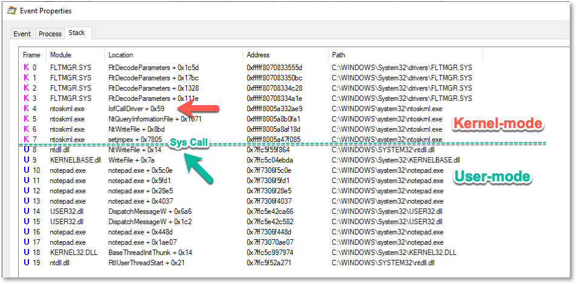

# Syscalls
Links:•
https://en.wikipedia.org/wiki/System_call•
https://jhalon.github.io/utilizing-syscalls-in-csharp-1/ - Good explanation of syscalls but C# implementation
•
https://outflank.nl/blog/2019/06/19/red-team-tactics-combining-direct-system-calls-and-srdi-to-bypass-av-edr/ - Good explanation, goes in-depth
•
https://www.ired.team/offensive-security/defense-evasion/using-syscalls-directly-from-visual-studio-to-bypass-avs-edrs - A how-to about using syscalls
•
https://medium.com/@fsx30/hooking-heavens-gate-a-wow64-hooking-technique-5235e1aeed73 - About heaven's gate but covers syscalls too
•
https://www.malwaretech.com/2013/06/rise-of-dual-architecture-usermode.html - About syscalls/WoW64 and touches on heaven's gate
Easy clear to read articles:
•
https://www.malwaretech.com/2014/06/usermode-system-call-hooking-betabo.html•
https://www.malwaretech.com/2015/07/windows-10-system-call-stub-changes.htmlLibraries:•
https://github.com/JustasMasiulis/inline_syscall ◇ scrapes the in-memory NTDLL module in order to extract the raw syscall numbers
◇ can't be compiled with msvc or gcc (use mingw. don't know of other compilers)
◇ example:
https://iwantmore.pizza/posts/PEzor.html#shellcode-injection-with-syscall-inliningBy using the
syscall instruction, you can bypass calling Windows APIs.
This can have a variety of benefits:
• bypass userland hooks (because you're not calling the API function)
• hide your imports (because you're not calling any Windows APIs)
## About System Calls
Userland APIs provide access to a number of useful functions, such as:
•
CreateProcess for spawning processes
•
CreateFile for saving/creating files
However, these functions are privileged instructions.
This is because they require access to the kernel.
Privileged instructions might require access to the kernel for a multitude reasons, like:
• using kernel data structures - like the
EPROCESS list in
NtCreateProcess• accessing hardware - like writing files to disk in
NtWriteFileA system call is how a userland program requests access to the kernel,
and a system call instruction is how the CPU switches from Ring 3 (userland) to Ring 0 (kernel mode).
•
sysenter on x86
•
syscall on x64
With the CPU in ring 0 (kernel mode),
it will be able to access kernel mode structures and do kernel things (access hardware, etc.)
### Userland API -> Native API -> ntoskrnl.exe
The Userland APIs -
CreateProcess,
CreateFile -
set up parameters on the stack and pass execution to the Native API.
The Native API in Ntdll.dll -
NtCreateProcess,
NtCreateFile -
switches the CPU into kernel mode.
Now in kernel mode,
ntoskrnl.exe will call further internal kernel functions
to carry out the function call -
IopCreateFile### ntoskrnl.exe
Ntdll.dll exports all of
ntoskrnl.exe's functions and handles syscalls into the kernel.
ntoskrnl.exe is where the code for all of the internal Windows API functions code actually lives.
## NtCreateFile Example
### Ntdll.dll
Here's
NtCreateFile from
Ntdll.dll on
Windows 10 x64It's moving the syscall value for NtCreateFile -
55h - into EAX and then executing
syscall.
The CPU's execution mode will jump into kernel mode.
lkd> uf ntdll!NtCreateFile
ntdll!NtCreateFile:
00007ffe`cdaaca40 4c8bd1 mov r10,rcx
00007ffe`cdaaca43 b855000000 mov eax,55h
00007ffe`cdaaca48 f604250803fe7f01 test byte ptr [SharedUserData+0x308 (00000000`7ffe0308)],1
00007ffe`cdaaca50 7503 jne ntdll!NtCreateFile+0x15 (00007ffe`cdaaca55) Branch
ntdll!NtCreateFile+0x12:
00007ffe`cdaaca52 0f05 syscall
00007ffe`cdaaca54 c3 ret
### ntoskrnl.exe
Here's
NtCreateFile from
ntoskrnl.exeThe CPU is now executing in kernel mode.
NtCreateFile sets up the parameters on the stack and then calls further internel kernel functions to create the file.
lkd> uf nt!NtCreateFile
nt!NtCreateFile:
fffff802`08c6ccb0 4881ec88000000 sub rsp,88h
fffff802`08c6ccb7 33c0 xor eax,eax
fffff802`08c6ccb9 4889442478 mov qword ptr [rsp+78h],rax
fffff802`08c6ccbe c744247020000000 mov dword ptr [rsp+70h],20h
...
...
...
...
fffff802`08c6cd24 e817000000 call nt!IopCreateFile (fffff802`08c6cd40)
fffff802`08c6cd29 4881c488000000 add rsp,88h
fffff802`08c6cd30 c3 ret
## NtWriteFile Example
Here's a great diagram from
outflank.nl about the calling process for Notepad calling
WriteFile:
1.
WriteFile called
2.
NtWriteFile from ntdll.dll executes syscall
3. The CPU is now running in kernel mode and
ntoskrnl.exe calls
NtWriteFile to create the file
By executing what Ntdll.dll basically does, and copying the syscall value for the function you want into EAX and calling
syscall, you can bypass calling any Windows APIs and subvert monitoring of your code.